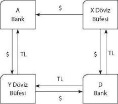

GİRİŞ
Bu bölümde, daha önce genel hatlarıyla tanıtılmış olan mali piyasaların ülkemizdeki uygulamalarını tartışacağız. Bu anlamda ülkemizde hâlen varolan mali piyasaları, temelde organize olup olmamalarına göre ayıracak ve bunları detaylandıracağız.
Söz konusu piyasaların incelenmesiyle, günlük gazete ve televizyon yorumlarında karşılaştığımız, bankalar arası para piyasası, APİ, ihale, İnterbank, Merkez Bankası müdahalesi, altın borsası ve benzeri tüm işleyen finansal sistemleri ve yaklaşımları tanımış olacağız. Ve bunun devamında göreceğiz ki, aslında anlaşılamayacak kadar zor ya da karmaşık bir sistem yok, yanlızca anlatılamamış ve belki de bilgiyi paylaşmamak için zor gösterilmiş bir sistem var karşımızda.
Bu bölümün içeriği aşağıdaki biçimde olacaktır:
Türk Mali Piyasaları
a. Mali piyasaları oluşturan unsurlar
b. Ekonomi içinde mali piyasaların işlevleri
c. Mali piyasaların türleri
Organize Piyasalar
1. TCMB Piyasaları
a. TCMB Açık Piyasa
b. TCMB Para Piyasası
c. TCMB Döviz Piyasası
2. İMKB Piyasaları
a. İMKB Tahvil ve Bono Piyasası
b. İMKB Hisse Senetleri Piyasası
c. İMKB UP Uluslararası Tahvil ve Bono Piyasası
3. İstanbul Altın Borsası (IAB)
4. İzmir Vadeli İşlemler ve Opsiyon Borsası (VOB)
5. Takasbank Para Piyasası
Organize Olmayan (Tezgâhüstü) Piyasalar
a. Bankalar Arası TL Piyasası
b. Bankalar Arası Repo Piyasası
c. Bankalar Arası Tahvil Piyasası
ç. Bankalar Arası Döviz Piyasası
d. Serbest Döviz Piyasası
e. Serbest Altın Piyasası
Genel Durum
Dünya genelindeki ekonomilerin globalleşmesi ve ülkeler arası mal ve hizmet akımında engellerin kaldırılması, ülkeler arası ticaret hacmini önemli ölçüde artırmıştır. Global olarak üretimde verimliliği ve dolayısıyla toplumlardaki refahı artırmayı amaçlayan çabalar sonunda, sermayenin de serbest bir şekilde bir ülkeden diğer bir ülkeye geçişi kolaylaştırılmıştır. Teknolojide ve özellikle de iletişimde yaşanan hızlı gelişme, dünya ticaret hacmi ve sermaye hareketlerini artırmada önemli bir rol oynamıştır. Bir ülkenin diğer ülkelere satabileceği mal ve hizmetlerin miktarı artık sadece o mal ve hizmeti üreten ülkenin ekonomik durumuna veya teknolojik imkânlarında oluşabilecek gelişmelere bağlı olmamaktadır. Mal veya hizmetleri alacak ülkelerin ekonomik durumları ve olası gelişmeler, ihracatçı durumda olan ülkeleri de etkileyecektir.
Benzer biçimde, sermaye hareketlerinin de serbestliğinin sağlanmış olması, sermayeye sahip olan ülkelerin diğer ülkelere de yatırım yapmalarına olanak sağlamıştır. Elbette söz konusu sermaye hareketlerinin miktarını, sermayenin geldiği ülkelerin yabancı sermayeye olan tutumları da belirlemektedir. Tüm bu bilgiler ışığında, piyasaları incelerken hem yerli hem de uluslararası piyasaların birbirleriyle etkileşimlerini incelemek gerekmektedir.
Söz konusu inceleme esnasında, ülkelerin göreceli büyüme hızları gibi kavramlar da dikkate alınmalıdır. Bu noktada Avrupa Birliği’ne mal satmayı planlayan Türkiye örneği düşünülebilir. Avrupa’ya mal satan Türkiye açısından, Avrupa’nın büyümesi daha çok ihracat anlamına gelecektir. Bu durum Türkiye için daha çok üretim, daha çok istihdam, büyüme gibi sonuçlar anlamına gelecektir.
Elbette bu durumun tersi de düşünülebilir. Tüm ekonomisini Avrupa’ya ihracat üzerine kuran bir ülke Avrupa’daki olası ekonomik durgunluk ya da gerileme, ihracatçı ülkenin dış ticaretinde sorunlara yol açabilecektir. Tüm bu bilgiler eşliğinde, ülkemizin büyüme hızını, dış ticaret hacmini, döviz denge kurunu, faiz hadlerini öngörebilmek adına, Türkiye’nin dış ticaret ilişkisinde bulunduğu ülkelerdeki ekonomik gelişmeleri izlemek gerektiği görülmektedir. Öte yandan, sermaye transferi de önemli bir kavram olarak ekonomik durumları etkileyecektir. Örneğin, sermaye transferi alan ülkelerin ekonomilerinin kaynak ihtiyacını daha kolay temin etmesi bakımından üretimlerini artırmaları beklenmelidir.
Bu durumu makroekonomik denge ile açıklayabiliriz. Buna göre:
Y = C + I + G + (X-M)’dir. Burada:
C : tüketim harcamaları,
I : yatırım harcamalarıı,
G : kamu harcamaları,
X : ihracat,
M : ithalat,
Y : gayrisafi millî hasıladır.
Buna göre, aslında tüm hasıla yatırım ve tüketimin toplamına eşit olmakta, ancak ithalat ile ihracat arasındaki fark bu eşitliği dengeleyici rol üstlenmektedir. Yani, dış âlemle bir ilişki olmasa tüm hasıla yatırım ve tüketim toplamına eşit olacak iken, dış ticaretteki dengesizlik söz konusu harcanabilir pastayı olumlu ya da olumsuz yönde etkileyebilecektir. Zira, ihracatın ithalatı aşması durumunda gayrisafi millî hasıla artacak, aksi durumda ise azalacaktır.
Bu durum neticesinde, bir ülkenin iç dinamiklerine bakmanın yeterli olmadığını ve hem iç hem de dış etmenlerin birlikte incelenmesi gerektiğini görmekteyiz. Uluslararası iktisat bilgisini başka bir çalışmanın ilgi alanına bırakarak, ülkemizdeki piyasaların işleyişlerini ve birbirleriyle etkileşimlerini bu çalışma bünyesinde özetle incelemeye çalışacağız.
Buna göre çalışmamız aşağıdaki sıraya göre başlayacak ve gelişecektir:
• Türk mali piyasaları
• Organize piyasalar
• Organize olmayan (tezgâhüstü) piyasalar
TÜRK MALİ PİYASALARI
Mali piyasalar fon arzı ile fon talebinin karşılaştığı piyasalardır. Buna göre, teorik olarak, ekonomide tasarruf olarak oluşan kaynaklar, yatırım amacıyla fon ihtiyacı duyan kesimlere doğru kayar ve bu kayma esnasında, arz talep dengesi doğrultusunda bir fiyat oluşur. Fonun kaynağı olarak düşünülen ve esasen paranın zaman değerini ifade eden bu fiyat, faiz, kâr payı ya da benzeri adlarla karşımıza çıkmakta ve esas olarak gelecekteki paranın değerini bugüne indirgeyen iskonto oranı olmaktadır.
Ülkemizdeki mali piyasaları farklı biçimlerde sınıflandırabiliriz. Örneğin ilk ayrım, piyasaları vadelerine göre sınıflandırmak olacaktır. Daha önceki bölümde, piyasaları vadelerine göre:
• Para piyasaları (kısa vadeli fon arz talebinin karşılaştığı piyasalar),
• Sermaye piyasaları (orta ve uzun vadeli fon arz talebinin karşılaştığı piyasalar)
biçiminde ayırmıştık. Öte yandan, piyasaları alım satım taraflarına göre de ayırabiliriz. Bunlar:
• Birincil piyasa (ihraççıdan yatırımcıya menkul kıymetin aktarıldığı ve yatırımcının sağladığı kaynağın doğrudan ihraççıya yönlendiği piyasalardır).
• İkincil piyasa (birincil piyasayı takiben piyasaya çıkan menkul kıymetlerin bireysel ya da kurumsal yatırımcılar arasında el değiştirdiği piyasalardır).
Söz konusu ayrımları yaptıktan sonra, gerekli bir diğer ayrım ise ikincil piyasaların kendi içlerindeki ayrımı olacaktır. Buna göre ikincil piyasalar tüm tarafların işlemlerden haberdar olup olmadıklarına ve tarafların kendilerine pozisyon tutup tutmadıklarına göre organize ya da organize olmayan piyasalar olarak ikiye ayrılacaklardır. Buna göre:
• Organize piyasalar : Potansiyel tüm tarafların tüm işlemlerden haberdar oldukları ve aracılık faliyeti yapılan, tek fiyat oluşan piyasalardır.
• Organize olmayan (tezgâhüstü) piyasalar: Aracıların kendilerine pozisyon taşıdıkları, yani çoklu fiyat sisteminin işlediği bir sistemdir. Taraflar tüm emirlerden haberdar olmazlar, dolayısıyla pazarlık şansı vardır.
Piyasaları organize ve tezgâhüstü olarak ikiye ayırmak şeklinde yaptığımız bu gruplama neticesinde, ülkemizdeki mali piyasaları şu şekilde sınıflandırabiliriz:
Tablo A
| Ülkemizde Faaliyet Gösteren Mali Piyasalar | |
| Organize Piyasalar | Organize Olmayan Piyasalar |
| TCMB Açık Piyasa | Bankalar Arası TL Piyasası |
| TCMB Interbank Para Piyasası | Bankalar Arası Repo Piyasası |
| TCMB Döviz Piyasası | Bankalar Arası Tahvil Piyasası |
| İMKB Tahvil ve Bono Piyasası | Bankalar Arası Döviz Piyasası |
| İMKB Hisse Senedi Piyasası | Serbest Döviz Piyasası |
| İMKB UP Uluslararası Tahvil ve Bono P. | Serbest Altın Piyasası |
| İstanbul Altın Borsası | |
| Vadeli İşlemler ve Opsiyon Borsası (VOB) | |
| Takasbank Para Piyasası | |
Şimdi bu piyasaları ayrıntılı olarak inceleyelim:
ORGANİZE PİYASALAR
1. TCMB Piyasaları,
a. TCMB Açık Piyasa
Türkiye Cumhuriyeti Merkez Bankası (TCMB), kanun uyarınca, para arzının ve ekonomideki likiditenin düzenlenmesi amacıyla bünyesinde 1987 yılından itibaren açık piyasa işlemlerine başlamıştır. TCMB, bu piyasada DİBS’nin (Devlet İç Boçlanma Senetleri) doğrudan alım satımı ya da geri alım vaadiyle satımı, geri satım vaadiyle alımı işlemlerini yapmaktadır.
Örneğin piyasada likidite sıkıntısı yaşandığında TCMB, bankacılık sistemi rezervlerini geçici bir süre için artırmak amacıyla aracı kuruluşlardan portföylerindeki DIBS’leri ileri bir tarihte belli bir fiyattan geri satmak vaadiyle satın almaktadır. Benzer biçimde, piyasada likidite bolluğu yaşandığı geçici dönemlerde de TCMB, portföyündeki DIBS’leri geri satın alma vaadiyle satacak ve likidite fazlasını piyasadan çekmiş olacaktır.
TCMB piyasadaki likiditeyi dengelemek amacıyla DIBS’leri geri alım ya da satım vaadiyle satmak veya almak yolunu izleyebileceği gibi, söz konusu senetleri kesin suretle almak ya da satmak yoluna da gidebilmektedir.
Açık piyasa, günlük piyasadan çok, müdahale ve dengeleme amaçlı bir piyasa olduğundan diğer piyasalara paralel çalışmaktadır. Dolayısıyla sürekli işlem içermez ve ortalama hacim gibi bir kavram anlamlı değildir.
b. TCMB Para Piyasası
TCMB Interbank para piyasası, TCMB bünyesinde, ekonomiyi yönlendirebilmek ve sistemdeki likiditeyi ayarlayabilmek için 1986 yılından beri işlemektedir. Bu piyasada bankalar hem kendi aralarında para alışverişinde bulunabilmekte, hem de gerektiğinde, Merkez Bankası taraf olarak sisteme girerek para arzı ya da talebini dengelemektedir.
Bu piyasada TCMB, gerek tüm piyasa katılımcılarının durumunu en iyi bilen taraf olarak, hem de piyasa koşulları ve kendi misyonunun izin verdiği ölçüde risk alan rasyonel bir kuruluş olarak, katılımcılar için birer "limit" tahsis eder. Buna göre, TCMB nezdinde tüm katılımcıların birer risk limiti vardır ve katılımcılar bu piyasadan söz konusu limit dâhilinde borçlanabilirler. Söz konusu limit, hem ilgili bankanın yapısı, büyüklüğü, riski ile hem de borcuna karşı ortaya koyduğu teminatı ile ilgilidir. Bankalar söz konusu limitleri dâhilinde fon ihtiyaçlarını karşılayamazlar ise, alternatif piyasalara, örneğin bankalar arası TL piyasasına yönelebilirler.
Bu amaçla Merkez Bankası günlük olarak ve kendi politika ve hedefleri çerçevesinde günlük borçlanmada alt ve üst faiz oran limitlerini belirlemektedir. Böylece, o gün içinde, bankaların birbirlerine verecekleri borçlar için alt ve üst faiz oranları saptanmış olur. Bundan sonra borçlanmalar söz konusu limitler içinde yapılır. Ancak piyasa gerekleri doğrultusunda, bu limitlerin aşılması durumunda, Merkez Bankası, kendi saptamış olduğu limit değerler üzerinden piyasada alıcı ya da satıcı olabilmektedir.
TCMB’nin bu tarzdaki müdahaleleri, piyasadaki nakit akışının yaratabileceği dengesizlikleri giderici bir nitelik taşımaktadır.
c. TCMB Döviz Piyasası
TCMB bankalar arası döviz piyasası, bankalar arası döviz ve efektif hareketlerini düzenlemek, bankacılık sektöründeki döviz ve efektif kaynaklarının daha etkin kullanımını sağlamak ve para politikasına esneklik kazandırabilecek enstrüman sayısını arttırmak amacıyla 1988 yılında kurulmuştur.
Döviz ve efektif piyasalarına, bankalar, yetkili müesseseler ve özel finans kurumları katılabilmektedir TL/Döviz piyasasında yetkili kurumlar kendi aralarında Türk Lirası karşılığı döviz alım satım işlemleri yapabildiği gibi, TCMB, gerek kendisine pozisyon tutmak, gerekse kurlara müdahale etmek amacıyla piyasaya girebilmektedir.
TCMB, müdahale kararını, döviz piyasasındaki kurların kendi beklenti kurundan çok sapması durumunda vermektedir. Söz konusu beklenti kuru, dış piyasalardaki parite ve ülkeler arasındaki enflasyon farkı hesaplanarak saptanmaktadır. Böylesi bir çalışmada, bir döviz sepeti oluşturulmakta ve bu sepetle ilgili her türlü parite değişikliğiyle birlikte beklenti kuru da yeniden saptanmaktadır.
2. İMKB Piyasaları
a. İMKB Tahvil ve Bono Piyasası
İMKB tahvil ve bono piyasası bünyesindeki kesin alım satım pazarı 1991 yılında ve repo - ters repo pazarı 1993 yılında faaliyete geçmiştir.
Kesin alım satım piyasasının kurulmasındaki amaç, sabit getirili menkul kıymetlerin aracı kuruluşlar arasındaki kullanımını daha verimli kılmak ve şeffaf bir ikinci el piyasa oluşturarak menkul kıymet ihracını artırmaktır.
Repo - ters repo pazarı ise, kurulumasıyla birlikte, aracı kuruluşlar arasındaki fon akışını düzenleyerek repo işlemlerinin şeffaf bir ortamda gelişmesini sağlamaktır.
Genel olarak bakıldığında ise, İMKB tahvil ve bono piyasasının kurulmasıyla sabit getirili menkul kıymetlerin ikinci el işlemleri yaygınlaşmış ve piyasaya ulaşımdaki kolaylık, işlem maliyetlerinin düşüklüğü ve takas güvencesiyle piyasanın etkinliği sağlanmıştır.
b. İMKB Hisse Senetleri Piyasası
3 Ocak 1986’da ilk işlemi gerçekleşen İMKB hisse senetleri piyasası, sonsuz vadeli birer enstrüman olan hisse senetlerinin el değiştirmesine organize olarak aracılık etmektedir. Bu anlamda, sonsuz vadeli birer enstrüman olan hisse senetlerine yatırım yapan yatırımcılar için beklenen getiri iki türlü olabilir. Bunlardan birincisi hisse senetlerinin temettü (kâr payı) getirisi, ikincisi ise hisse senetlerinin değer artışı olacaktır.
Şirketlerin dağıtacakları kâr payları ve/veya hisse senedinin değerindeki artışın yeterli olmadığını düşünen ya da artık hisse değerinin olması gerekenin çok üzerinde olduğunu düşünen yatırımcılar, söz konusu hisse senetlerini satmayı düşüneceklerdir. İşte bu noktada satışı gerçekleştirebilecekleri organize piyasa, İMKB hisse senetleri piyasası olacaktır. Bu piyasada yanlızca borsa üyesi aracı kurumlar işlem yapabilmektedirler.
İstanbul Menkul Kıymetler Borsası, menkul kıymetler borsaları hakkında 91 sayılı Kanun Hükmünde Kararname’de öngörülen görevleri yerine getirmek üzere kurulmuş, yetkilerini kendi sorumluluğu altında bağımsız olarak kullanan ve Sermaye Piyasası Kurulu’nun gözetim ve denetimi altında olan tüzel kişiliği haiz bir kamu kurumudur. İMKB, resmi çalışma günlerinde faaliyette bulunur. Aynı zamanda bir meslek kuruluşudur. Her meslek kuruluşu gibi üyeleri vardır. Borsa üyeleri;
• Yatırım ve kalkınma bankaları,
• Ticari bankalar,
• Aracı kurumlardır.
c. İMKB UP Uluslararası Tahvil ve Bono Piyasası
Uluslararası kapsamda ihraç edilen borçlanma araçlarının organize bir piyasada işlem görmesini sağlamak amacıyla kurulmuştur. Türkiye Cumhuriyeti ve mahalli idarelerince yurt dışında satılmak üzere ihraç edilen uluslararası tahviller 1997 yılından beri bu piyasada işlem görmeye başlamıştır.

İMKB tahvil ve bono piyasası gibi çalışır. Ancak uluslararası kapsamda ihraç edilen menkul kıymetlerin işlem görmesi için kullanılmaktadır.
3. İstanbul Altın Borsası
Türkiye’deki mevcut altın potansiyelinin sisteme sokularak ekonomiye kazandırılması amacıyla 1995 yılı itibarıyla külçe altın alımı ile faaliyete geçmiştir. Günümüzde gümüş ve platin ile ilgili vadeli işlemler de yapılmaktadır. Hazine müsteşarlığından izin alan borsaya üye bankalar, yetkili müesseseler ve kıymetli maden aracı kurumları işlem yapabilmektedirler.
Piyasada üyeler borsa takas merkezine teslim ettikleri altınların 20 katı kadar işlem yapabilmektedirler. Verilen emirler, 1 kg ve katları şeklinde olup, en küçük emir miktarı 5 kg olarak saptanmıştır.
Temel olarak arz ve talebe bağlı olmakla birlikte altın fiyatlarının birtakım siyasi-politik etkilere karşı oldukça duyarlı olduğu bilinmektedir. Buna göre savaş, kriz gibi dönemlerde fiyatlar yükselmekte, istikrarın sağlandığı dönemlerde ise düşmektedir. Buna eklenmesi gereken bir diğer bilgi de altın fiyatlarının tek fiyat yasasına bağlı olarak tüm dünyada aynı fiyattan işlem görmesi gereğidir. Durum böyle olunca, Türkiye’deki altın fiyatları yurt dışındaki altın fiyatları ve yurt içindeki altın fiyatlarından doğrudan etkilenmektedir. Elbette, mevsimsel ve diğer yatırım araçlarının fiyatlarıyla ilişkili fiyat dalgalanmaları da söz konusudur.
4. İzmir Vadeli İşlemler ve Opsiyon Borsası (VOB)
Genel olarak vadeli işlemler ve özelinde İzmir’de 2005 Şubat ayında işleme başlayan VOB, ülkemizdeki kısa geçmişine rağmen, yüksek beklenti nedeniyle büyük ilgi toplamaktadır. Söz konusu piyasaları ve özelinde VOB’u dört başlıkta inceleyeceğiz:
• Vadeli işlem nedir?
• Vadeli işlem piyasalarının geçmişi
• Günümüzde vadeli işlem piyasaları
• Türkiye’deki durum ve VOB
Vadeli İşlem Nedir?
Vadeli işlem piyasaları, bir malın (tarımsal mal, değerli maden, döviz, hazine bonosu, devlet tahvili, borsa endeksi) taraflar arasında yapılan anlaşma sonucu belirli bir fiyattan ileriki bir tarihte teslim edilmek üzere alım satım sözleşmelerinin yapıldığı ve bu sözleşmelerin el değiştirdiği borsalardır.
Vadeli işlem piyasalarında üç çeşit işlem söz konusudur. Bunlardan birincisi ve en eskisi alım satım işlemlerinin taraflar arasındaki karşılıklı güvene ve anlaşmaya dayandığı "forward" sözleşmeleridir. İkincisi ise alım satım hakkının belli bir prim karşılığında ileriki bir tarihte saklı tutulduğu "options" tipi sözleşmelerdir. Üçüncüsü ise "futures" işlemlerdir. Futures işlemleri, forward işlemlerden ayıran en önemli özellik, bu tip işlemlerde mal, ödeme mekânı, değer ve kalite açısından belli bir standardizasyonun sağlanmış olması ve bu işlemlerin takas odası garantörlüğü altında gerçekleştirilmesidir.
Vadeli İşlem Piyasalarının Geçmişi
Vadeli ürün işlemleri ve bu işlemlerin yapıldığı piyasaların ortaya çıkması oldukça eskilere dayanmaktadır. İlk futures işlemi 1679 yılında Japonya’da kaydedilmiştir. Bu dönemde daha çok kişisel işlemler olarak kalan bu tür işlemler için ilk piyasa sayılabilecek örgütlenme 1730 yılında Osaka’da kurulan Dojima Pirinç Ticaret Borsası’dır.
Günümüzde bilinen anlamda modern vadeli işlem borsalarının oluşumu 1840’lı yıllarda Amerika Birleşik Devletleri’nde gerçekleşmiştir. Bu dönemde Chicago gerek ulaşım altyapısı, gerekse çevre eyaletler için bir pazar konumunda olması dolayısıyla tüccarların buluştukları bir merkez hâline gelmiştir. Ancak pazarda zaman zaman oluşan arz talep dengesizliği üreticileri ve tüccarları zor durumda bırakmıştır. Bu dengesizliğin önlenmesi amacıyla 1848 yılında Chicago Board of Trade (CBOT) olarak bilinen tahıl borsası kurularak pazar örgütlü bir yapıya kavuşturulmuştur.
Daha sonra değişik ürünlerin de piyasalarda işlem görmeye başlamasıyla 1919 yılında Chicago Merchantile Exchange (CME) olarak kurulan borsa bir kurum geleneğiyle günümüze kadar gelmiştir.
Günümüzde Vadeli İşlemler Piyasaları
Vadeli işlem piyasalarında yapılan işlemler 100 yıllık bir süre içinde tarım ve sanayi ürünlerinin konu olduğu mala dayalı işlemler şeklinde devam etmiştir. Ancak uluslararası ticarette 20. yüzyılın ikinci yarısından itibaren meydana gelen önemli gelişmeler karşısında finansman teknikleri yetersiz kalmış, piyasalarda oluşan tıkanmaların aşılması amacıyla vadeli işlem piyasalarında faiz, döviz, borsa endeksi, devlet tahvili ve hazine bonosu üzerine de vadeli işlem kontratları yazılmaya başlanmıştır.
Vadeli işlem piyasaları 1980’li yıllardan itibaren faiz, döviz ve endeks enstrümanlarının da işlem gördüğü, trilyon dolarların çok kısa bir süre zarfında el değiştirdiği ve borsaların birleşerek 24 saat boyunca işlem yapabildikleri piyasalar hâline gelmiştir.
Türkiye’deki Durum ve VOB
Gelişmiş ülkeler tarafından 1970’li yılların başlarından itibaren yaygın olarak kullanılan vadeli işlemler, 1980’li yılların sonlarına kadar Türkiye’de hemen hemen hiç uygulanmamıştır. Bunun temel nedeni ise ekonomik yapının henüz bu işlemlerin uygulanması için hazır ve yeterince gelişmemiş olmasıdır.
Hızla küreselleşen dünya ekonomisi ve finans piyasalarına Türkiye’nin entegre olmasını sağlayacak önemli araçlardan bir tanesi de vadeli işlem piyasalarıdır. Bu çerçevede İzmir Ticaret Borsası tarafından pamuk üzerine bir vadeli işlemler borsası oluşturulması yönünde girişimlere başlanmış ve Borsa Yönetmeliği, Resmi Gazete’de yayımlanmıştır.
Çeşitli ürünlerin yanı sıra, pamukta belli bir borsa geleneğinin mevcut olması ve İzmir’in stratejik ve jeopolitik konumu gözönüne alındığında, ülkemizdeki vadeli işlemler borsası için ürün olarak pamuğun, mekân olarak da İzmir’in seçilmesi doğru ve yerinde bir karar olarak görünmektedir.
İzmir’deki Borsa, Şubat 2005’te ilk etapta pamuk, buğday, İMKB-30, EURO/TL, USD/TL, 90 ve 365 günlük hazine bonoları üzerine vadeli işlemlere başlamıştır.
5. Takasbank Para Piyasası
İMKB bünyesinde faaliyet göstermeye yetkili kurumların nakit gereksinimlerini kendi aralarında karşılamaya yönelik olarak örgütlenen bir piyasadır.
TCMB piyasalarının anlatıldığı bölümlerden biliyoruz ki, bankalar geçici TL sıkışıklığı durumunda TCMB para piyasasını kullanabiliyorlardı. TCMB, bankaların mali bünyesini biliyordu ve bu bilgiyi dikkate alarak her biri için ayrı işlem limitleri saptıyor ve TCMB para ya da döviz piyasalarında işlem görmelerine izin veriyordu. Oysa aracı kurumların TCMB nezdinde bir işlem limitleri yok; zira, mali yapılarını TCMB değil, SPK inceliyor. Bunun pratik sonucu olarak da aracı kurumlar için TCMB dışında ayrı bir mali piyasa oluşturulması gündeme gelmiş ve bu piyasa da zaten hisse senedi takası neticesinde TL bolluğu yaşanan ve bunun için alt yapısı müsait olan Takasbank bünyesinde kurulmuştur. İşlemlerin garantörü de Takasbank’tır.
ORGANİZE OLMAYAN (TEZGÂHÜSTÜ) PİYASALAR
Mali piyasaların türleri konusunda yapmış olduğumuz ayrımın ikinci bölümü organize olmayan piyasalardı. Buna göre, ülkemizdeki organize olmayan piyasalar aşağıdaki biçimde sınıflandırılabilir:
1. Bankalar Arası TL Piyasası
2. Bankalar Arası Repo Piyasası
3. Bankalar Arası Tahvil Piyasası
4. Bankalar Arası Döviz Piyasası
5. Serbest Döviz Piyasası
6. Serbest Altın Piyasası
Tezgâhüstü piyasanın temel özelliği Merkez Bankası ya da İMKB gibi organize bir piyasanın değil de kurumların doğrudan birbirleriyle ilişkiye geçtikleri, organize olmayan bir piyasanın ön planda olması ve işlemesidir.
1. Bankalar Arası TL Piyasası
Organize piyasalar başlığı altında incelemiş olduğumuz TCMB Interbank para piyasasında TL işlemleri yapan ve açıklarını fonlayarak fazlalarını plase eden bankalar için TCMB’nin saptamış olduğu limitler mevcuttur. Buna göre, söz konusu limitler dâhilinde fon ihtiyaçlarını karşılayamayan ya da bu piyasadaki işlemlerin gerektirdiği maliyetleri yüksek bulan bankalar, TL borçlanma ihtiyaçlarını organize piyasa dışında da yürütebilirler.
Doğrudan birbirleriyle ilişkiye geçen bankalar, teminatsız olmakla birlikte, TCMB Interbank para piyasasının gerektirdiği masrafları da içermeyen bir sistemle TL alıp satarlar. Ancak bu sistemde de yine limitler vardır. Bu kez limitler TCMB tarafından belirlenmiş limitler olmayıp bankaların birbirleri için saptamış oldukları "risk limitleri"dir. Söz konusu limitler dâhilinde ve teminatsız olarak yapılan para alışverişi telefon pazarlığı ile ya da data sağlayıcı kuruluşların ekranları üzerinden yapılmaktadır.
2. Bankalar Arası Repo Piyasası
Bankalar arası repo piyasası da tıpkı diğer tezgâhüstü piyasalarda olduğu gibi, bankaların organize piyasadaki limitlerinin (line) dolu olması ya da daha düşük maliyetlerle işlem yapmak istemeleri durumunda kullandıkları piyasalardır.
Bu piyasalarda bankalar, arada bir garantör olmaması nedeniyle birbirlerinin risklerini almaktadırlar. Bu nedenle, söz konusu riski sınırlandırmak ve sınıflamak gerekliliği doğmaktadır. Bu noktada bankalar, birbirleri için limitler saptamakta ve bu limitler dâhilinde birbirlerine boç vermektedirler. Bu piyasada oluşan faiz oranları genellikle İMKB repo - ters repo piyasalarında oluşan faiz oranlarına paralel olmaktadır.
3. Bankalar Arası Tahvil Piyasası
Aracı kuruluşlar tahvil alım - satım işlemlerini İMKB tahvil-bono piyasasından doğrudan yapabilmekteyken, bu işlemleri kendi aralarında, özel bir düzenlemeye tabi olmadan da yürütebilmektedirler. Bunun temel nedeni İMKB’nin kendilerine tanımış olduğu limitlerin yetersiz kaldığı durumlardır.
İMKB’nin belirlemiş olduğu limitlerin ihtiyaçlarını karşılamadığı aracı kuruluşlar, kendi aralarında telefon ya da data dağıtım şirketlerinin sağladıkları ekranlardan ve pazarlık usulüyle gerçekleştirdikleri işlemlerde de tümüyle özgür değillerdir. Bu sefer de karşısındaki aracı kuruluşun riskini tümüyle ve sınırsız üstlenmek istemeyen karşı kuruluşların kendileri için saptadıkları limitler dâhilinde işlem yapabilmektedirler. Zira bu piyasada, tüm aracı kuruluşların risklerini sınırlandırmak amacıyla birbirlerine tanıdıkları limitler sınırlandırılmıştır. Bu piyasada fiyatlar genellikle İMKB kesin alım satım pazarında gerçekleşen oranlar baz alınarak tespit edilmektedir.

4. Bankalar Arası Döviz Piyasası
Bankalar, yetkili müesseseler, özel finans kurumları TCMB bünyesindeki döviz-efektif piyasasında işlemlerini yapabildikleri gibi, ikincil piyasa olarak adlandırılan ve özel bir düzenlemeye tabi olmayan piyasada kendi aralarında da işlem yapabilmektedirler. Pratikte döviz piyasasında gerçekleşen işlemlerin büyük çoğunluğu bankalar arası döviz piyasasında da gerçekleşmektedir.
Bu piyasada da bankalar birbirleri için limitler (line) saptamış ve teminat almaksızın bu limitler dâhilinde işlem yapmaktadırlar. İşlemler genellikle telefonla ya da data sağlayıcı firmaların sistemleri üzerinden yapılmaktadır. Söz konusu sistemler kullanıldığında, girilen kotasyonlar 500.000 USD için bağlayıcı nitelik taşımaktadır. Ancak TCMB, kurların kendi beklentisini aşırı biçimde aşması durumunda, bu piyasaya da müdahale edebilmektedir.
5. Serbest Döviz Piyasası
Serbest efektif (fiziki yabancı para) piyasası olarak da adlandırılan bu piyasada, işlemler bankalar ve yetkili müesseseler arasında gerçekleştirilmekte ve fiyatlar efektif talep ve arzına göre oluşmaktadır. Bu piyasanın işlem hacminin tüm döviz piyasası hacminin %10’u kadar olduğu tahmin edilmektedir.

Bu piyasada fiyatlar yerel piyasalardaki gelişmelere paralel olarak gelişmektedir. Örneğin, hazine itfası, vergi ödeme günleri, likiditenin sıkışık olduğu günlerde efektif (fiziki yabancı para) fiyatlar düşmekte, tersi durumlarda ise fiyatlar yükselmektedir.
6. Serbest Altın Piyasası
Altın almak ya da satmak isteyenler işlemlerini İstanbul Altın Borsası’nda yapabildikleri gibi, serbest altın piyasasında da yapabilmektedirler. Ancak borsada minimum işlem limiti olduğundan, küçük montanlı işlemler serbest altın piyasasında gerçekleşmektedir. Zira bu piyasa herhangi bir düzenlemeye tabi olmayıp işlemler pazarlık metodu ile gerçekleşmektedir.
İstatistiki bir bilgiye ulaşmanın mümkün olmadığı bilinmekle birlikte, tüm altın işlemlerinin yaklaşık %30’unun bu piyasada gerçekleştiği sanılmaktadır. Ayrıca İstanbul Altın Borsası’nda işlemler döviz karşılığı yapılırken, serbest piyasada efektif yapılmaktadır. Bu durumda efektif kurun döviz kurunun altında kaldığı durumlarda altının fiyatı TL bazında daha ucuz kalacak ve serbest altın piyasasında hacim artacaktır.
Bu bölümde, önceki bölümde tanımlanmış ve detayları tartışılmış olan piyasa kavramı çerçevesinde ülkemizde faaliyet gösteren piyasa ve pazarları tartıştık. Söz konusu pazarlar dışında kalan ve söz etmediğimiz birkaç pazar daha mevcuttur; ancak bir temel olarak okurun medyada duyması ya da yatırımlarını değerlendirirken kullanması muhtemel olanları derledik. Seçmiş olduğumuz piyasalar, ülkemizdeki kayıtlı işlem hacminin %99’undan fazlasının gerçekleştiği pazarlardır. Ancak ülkemizin gerçeği olan ve ekonominin tam olarak ne kadarını ifade ettiği konusunda sağlıklı rakamlara ulaşamadığımız, kayıt dışı rakamlar olduğu da unutulmamalıdır.